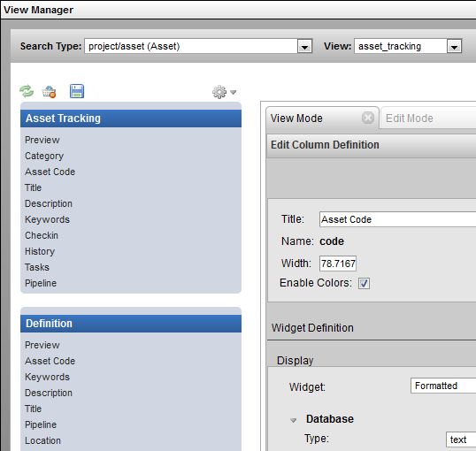
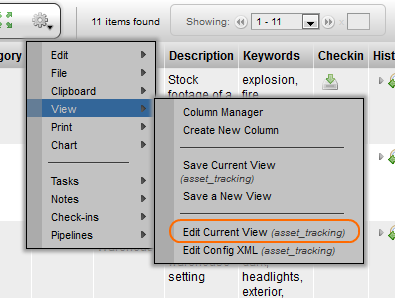
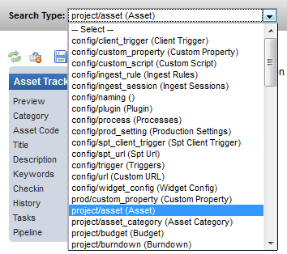
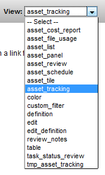
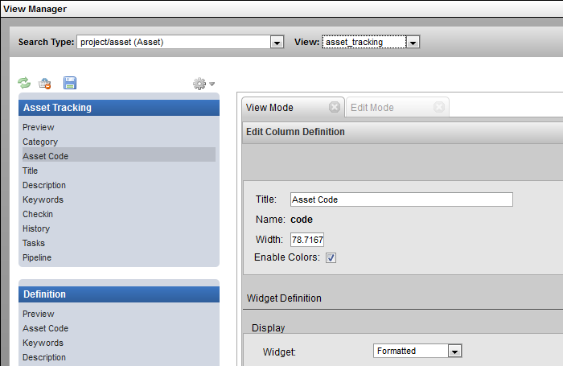
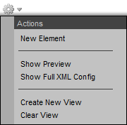
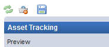

Description
The View Manager provides the ability to create, edit and modify views.
This tool can be opened to edit the current view under Gear Menu under: View → Edit Current View

The tool can also be opened and will prompt to select a Search Type and View to open in the sidebar under: Admin Views → Project Admin → Mange Config Views.
Implementation
In the View Manager, select the sType and View if not already selected for the current view. The drop down selection list provides access to quickly navigate through all the views available for the selected sType.
 |  |
On the side panel on the left, select an element to open the Column Definition view. The properties for the column are displayed and can be modified.

The gear menu in the View Manager provides the following options:

The Refresh, Trash and Save option buttons located to the left of the gear menu.
